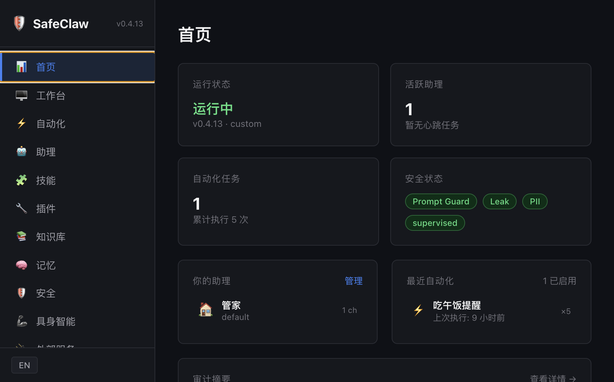
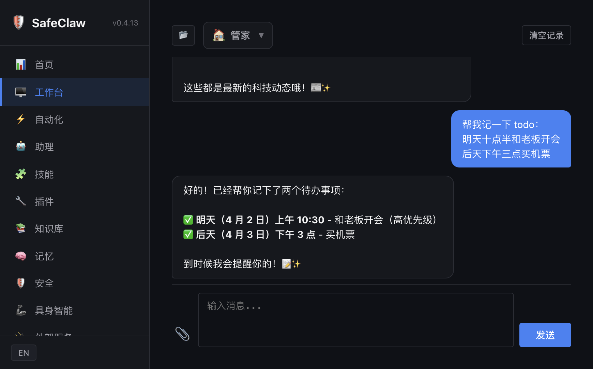
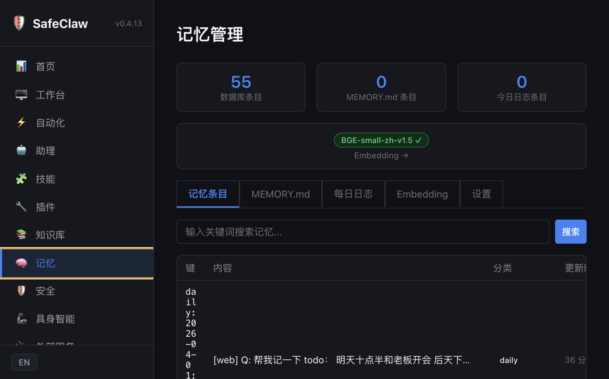
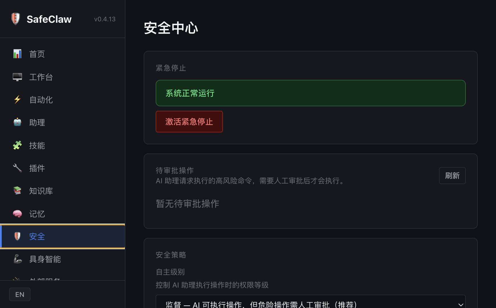

SafeClaw 是面向企业和高级用户的安全型 AI 助理网关平台。
Rust 构建，单一二进制，多层安全架构，多助手协同。
传统 AI 工具仅靠 prompt 约束安全行为——这既脆弱又不可靠。SafeClaw 通过运行时 + prompt 双重保障，在代码层面强制执行安全策略。
每条消息都经过入站/出站双向安全管线检测：Prompt 注入防护、PII 脱敏、凭证泄露扫描、危险操作确认——全部在 Rust 运行时中完成，不依赖模型"自觉"。
从安全管控到工具执行，从记忆知识到多助手协同，一站式覆盖
独创多层消息分离架构，敏感信息与 AI 模型彻底解耦，从根本上杜绝凭证泄露与隐私污染。
每个助手拥有独立人格、记忆、工作区。支持 Agent2Agent 协作与子 Agent 并行执行。
三层记忆架构 + 内置完整 RAG 管线。本地向量嵌入，混合搜索，自动捕获与召回。
CLI / HTTP / SSE / WebSocket / Web 控制台 / 飞书 / Telegram / Discord / WhatsApp，一套系统多个入口。
HEARTBEAT 周期巡检、Cron 定时任务、异常主动通知。不再只是“问一句答一句”。
Shell / 文件 / Git / 浏览器自动化 / Canvas / 图像理解 / 网页搜索 / HTTP 请求，全面的执行能力。
兼容 OpenClaw SKILL.md 标准。28+ 内置技能，ClawHub 社区仓库搜索安装，渐进式按需加载。
内置 Web Dashboard：聊天、仪表盘、助手管理、自动化、安全审计。macOS 系统托盘。
~15MB 编译产物，毫秒级启动，零 GC，可部署到服务器、桌面、NAS、树莓派、车载系统。
内置 Web 控制台覆盖日常所有管理场景




同为 AI Agent 框架，设计哲学截然不同
| 维度 | SafeClaw | OpenClaw |
|---|---|---|
| 核心理念 | 安全优先，可控边界 | 功能丰富，快速上手 |
| 技术路线 | Rust 系统级编程 | TypeScript 应用级编程 |
| 部署形态 | 单二进制 ~15MB，零依赖 | npm 生态，数百 MB node_modules |
| 多层消息安全隔离 | ✓ | ✗ |
| 入站/出站安全管线 | ✓ | ✗ |
| Prompt 注入检测 | ✓ PromptGuard | ✗ |
| 凭证泄露检测 | ✓ LeakDetector | ✗ |
| 沙箱执行 | ✓ Firejail / Docker | ✗ |
| 紧急停止 (E-Stop) | ✓ | ✗ |
| API Key 加密存储 | ✓ ChaCha20 | ✗ 明文/环境变量 |
| 内置 RAG 知识库 | ✓ 完整管线 | ✗ |
| 本地向量嵌入 | ✓ 零 API 调用 | ✗ 需外部 API |
| Web 控制台 | ✓ 内置 Dashboard | ✗ |
| 桌面 GUI | ✓ 系统托盘 | ✗ |
| SKILL.md 技能兼容 | ✓ | ✓ |
| 通道数量 | 6 个（含飞书/Telegram/Discord 等） | 20+ 通道 |
| 社区生态 | 早期阶段 | 32 万+ Stars |
运行时强制执行的安全边界，而非仅靠模型"自觉"
统一管理多个 AI 助手，安全接入内部系统，完整审计合规，RBAC 信任分级。
编程助手、代码审查、自动化测试、知识库问答，本地部署数据不离开设备。
Rust 单二进制适合资源受限环境，交叉编译支持 ARM/x86，零外部依赖。
下载 macOS 版，双击安装，几分钟内启动你的安全 AI 网关。